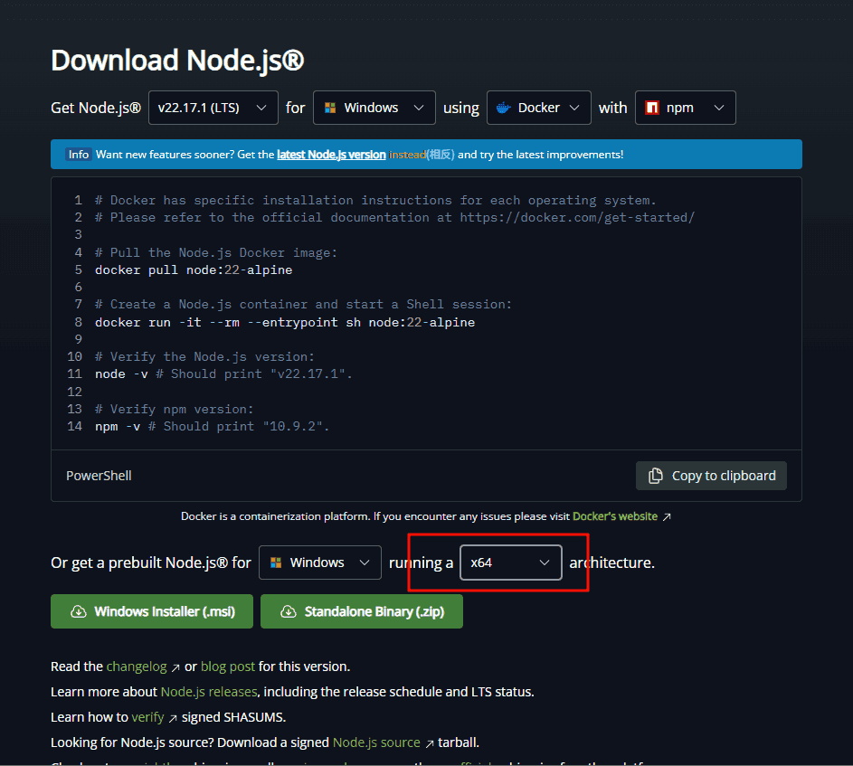
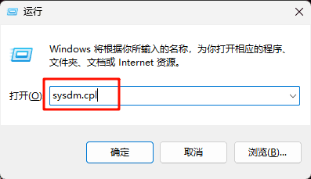
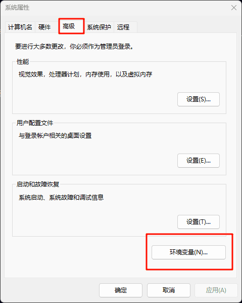
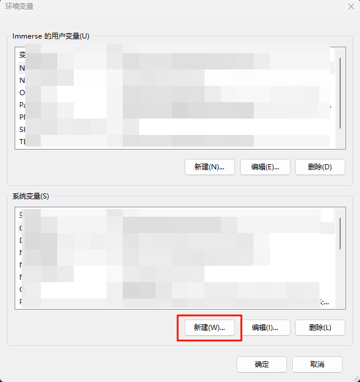
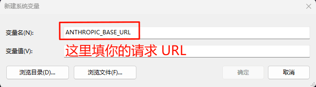
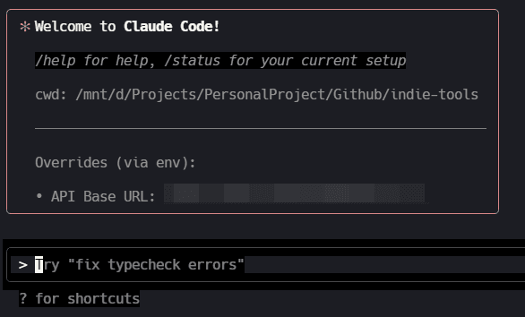

Windows 安装保姆级教程
大家好，我是 Immerse，一名独立开发者、内容创作者、AGI实践者。
关注公众号：#沉浸式趣谈
，获取最新文章（更多内容只在公众号更新)个人网站：https://yaolifeng.com
也同步更新。转载请在文章开头注明出处和版权信息。
我会在这里分享关于编程 、独立开发 、AI 、出海 、个人思考 等内容。
如果本文对你有帮助，欢迎动动小手指一键三连(点赞 、评论 、转发 )，给我一些支持和鼓励，谢谢！
上篇文章Windows 上安装使用 Claude Code 指南
聊到 Windows 安装 Claude Code 方式，必须安装 wsl，过程中会出现一个不可控的因素，劝退了很多人。
这几天发现了一种新方式，可以不用安装 wsl, 便捷快速使用。
可以不用安装 WSL 客户端, 直接在 Windows 里面的 Shell 操作就好
- 安装 Node.js
访问 Node 官网[1] , 选择正确的芯片结构，直接下载

安装 Node.js
2. 安装 Claude Code 包
npm install -g @anthropic-ai/claude-code --registry=https://registry.npmmirror.com- 设置系统环境变量
3.1 按 Win + R ，输入 sysdm.cpl ，点 确定 
3.2 选择的 高级 菜单，点击下面的 环境变量

3.3 选择 系统变量 类型的 新建

3.4 创建两个环境变量: ANTHROPIC_AUTH_TOKEN 和 ANTHROPIC_BASE_URL

3.5 确认创建好环境变量，关闭相关对话框
- 电脑打开 CMD 或 Power Shell ，输入 claude 即可开始
claude